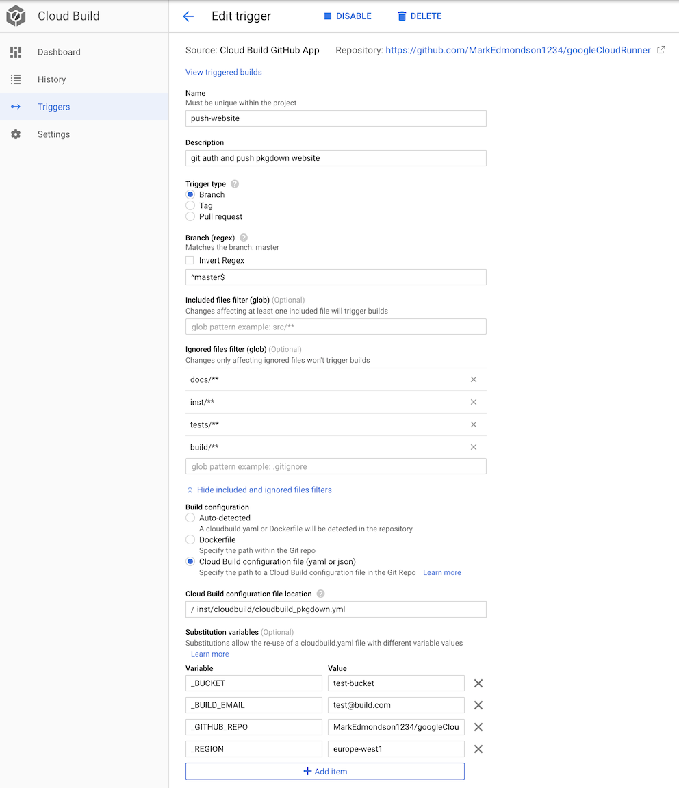

Deploy a pkgdown website for your R package
2022-03-26
Source:vignettes/usecase-deploy-pkgdown-website.Rmd
usecase-deploy-pkgdown-website.RmdWhen creating an R package pkgdown is a fantastic resource for creating a package website from your R function’s documentation and vignettes.
This workflow uses Google’s Secret Manager to securely hold your Git ssh login details, then use those details to commit a built website on each Git commit. This means you do not have to build the website locally.
Each commit you make, a background task will build the website with your changes and commit it back to the repo - see example for this website:

A suggested setup workflow to do this is below:
- Go to GCP console > Cloud Build > Triggers and link your git repo to Cloud Build.
- Create a git ssh key to make commits to your repo. GitHub has a guide here
- Upload the ssh key secret to Google Cloud Secret Manager - you can use this secret for all future builds.
- Use
cr_deploy_pkgdown()to create a cloudbuild.yml file in your R package’s directory, giving it your secret name from step 2.create_triggercan befileif you want the cloudbuild.yaml to be within your directory, orinlineif the build will only be defined in the trigger.
cr_deploy_pkgdown("MarkEdmondson1234/googleCloudRunner",
secret = "github-key",
create_trigger = "inline")- Commit to your git repository
The function will then create a build customised for creating and rendering pkgdown websites, and committing the rendered version to your GitHub /docs folder.
The below is an example for googleCloudRunner’s
website:

You can customise the deployment further by using
cr_buildstep_pkgdown() in your own custom build files. For
instance, you could download other auth keys using
cr_buildstep_secret() again, so that your website has
working authenticated examples.